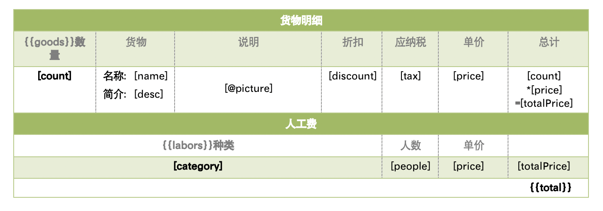
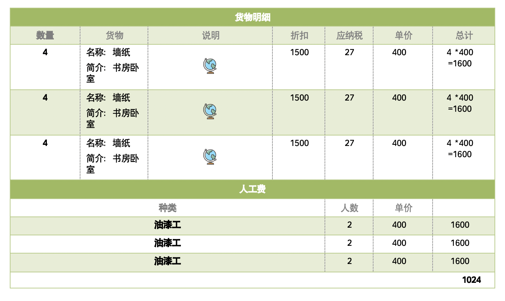
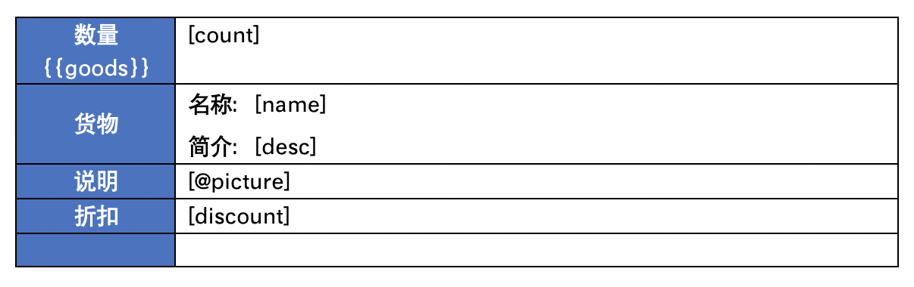
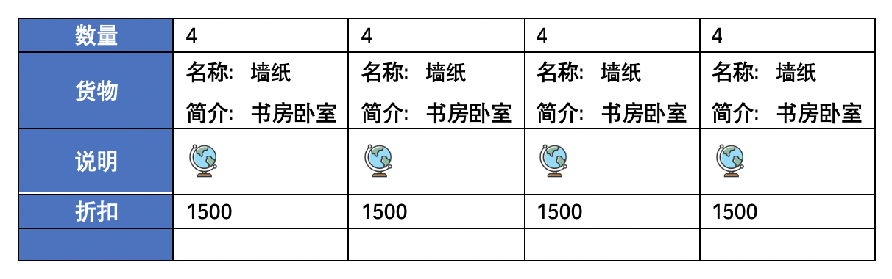
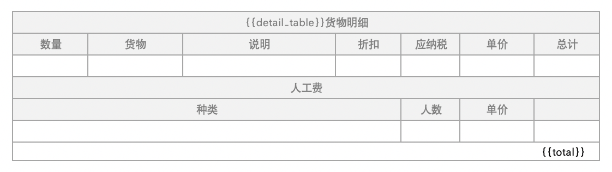
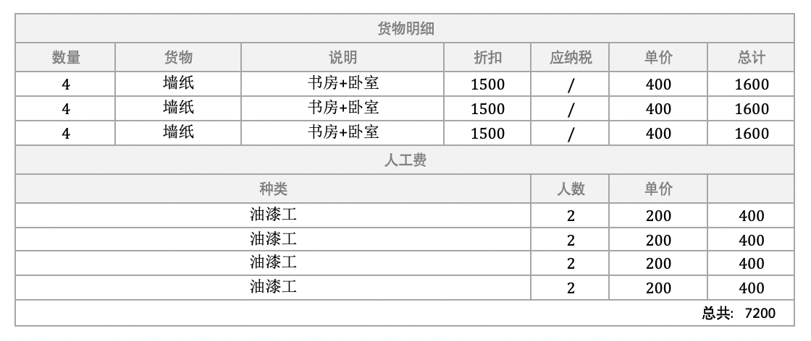
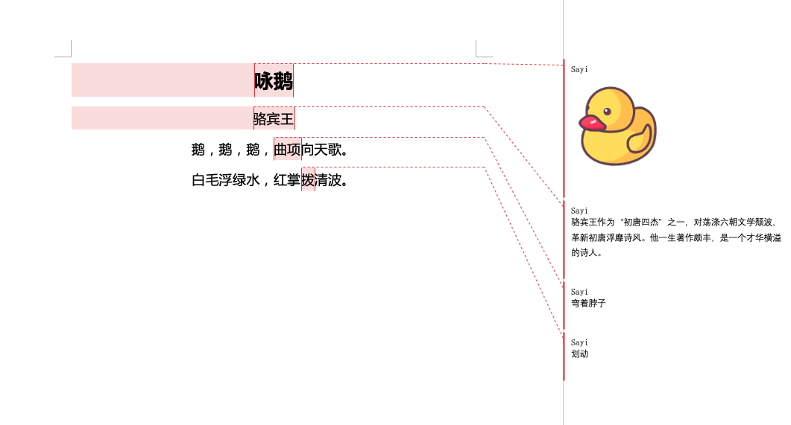
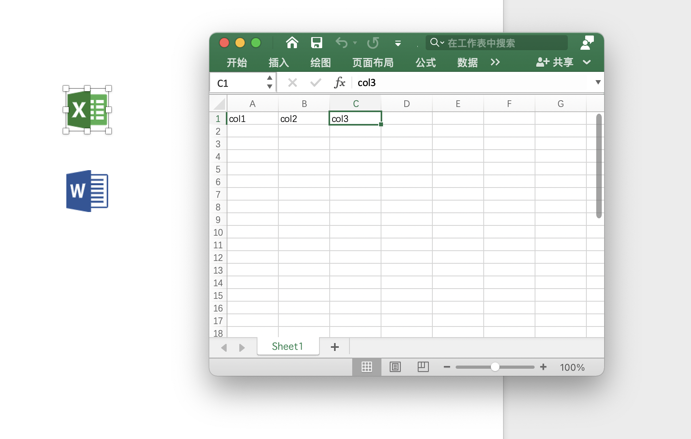
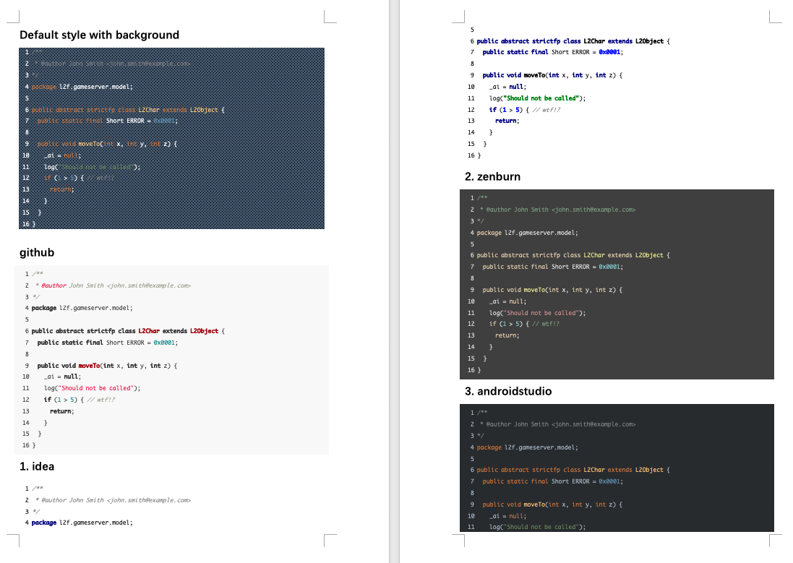
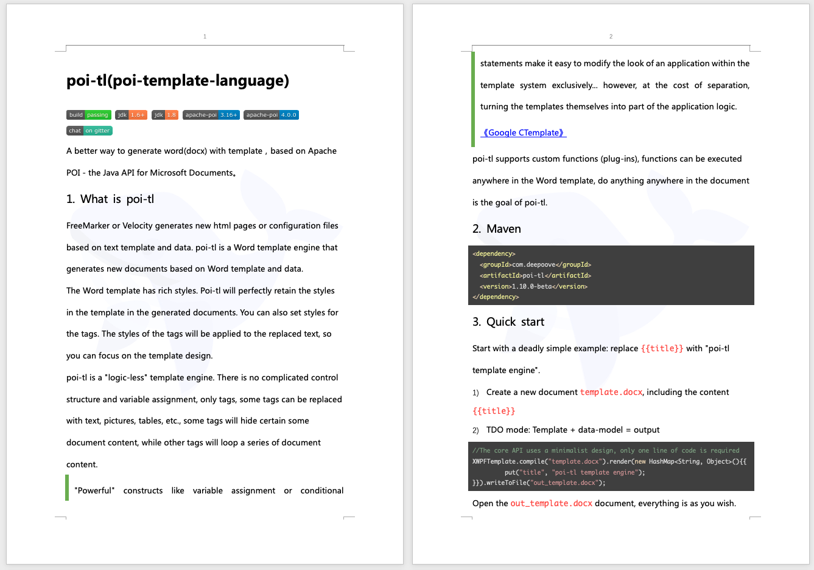

Poi-tl Documentation
Excerpt
word模板引擎
插件，又称为自定义函数，它允许用户在模板标签位置处执行预先定义好的函数。由于插件机制的存在，我们几乎可以在模板的任何位置执行任何操作。
插件是poi-tl的核心，默认的标签和引用标签都是通过插件加载。
6.1. 默认插件
poi-tl默认提供了八个策略插件，用来处理文本、图片、列表、表格、文档嵌套、引用图片、引用多系列图表、引用单系列图表等：
TextRenderPolicy
PictureRenderPolicy
NumberingRenderPolicy
TableRenderPolicy
DocxRenderPolicy
MultiSeriesChartTemplateRenderPolicy
SingleSeriesChartTemplateRenderPolicy
DefaultPictureTemplateRenderPolicy
由于这八个插件如此通用，因此将这些插件注册为不同的标签类型，从而搭建了poi-tl的标签体系，也构筑了poi-tl高度自由的插件机制。
6.2. 开发一个插件
实现一个插件就是要告诉我们在模板的某个地方用某些数据做某些事情，我们可以通过实现RenderPolicy接口开发自己的插件：
1 | public interface RenderPolicy { |
| 1 | ElementTemplate是当前标签位置 |
|---|---|
| 2 | data是数据模型 |
| 3 | XWPFTemplate代表整个模板 |
接下来我们写一个将标签替换为Hello, world的插件：
1 | public class HelloWorldRenderPolicy implements RenderPolicy { |
| 1 | XWPFRun是Apache POI的类，表示当前位置 |
|---|---|
| 2 | 渲染文本hello, world |
poi-tl提供了抽象模板类 AbstractRenderPolicy ，它定义了一些骨架步骤并且将数据模型的校验和渲染逻辑分开，使用泛型约束数据类型，让插件开发起来更简单，接下来我们再写一个更复杂的插件，在模板标签位置完完全全使用代码创建一个表格，这样我们就可以随心所欲的操作表格：
1 | public class CustomTableRenderPolicy extends AbstractRenderPolicy<Object> { |
通过 bodyContainer.insertNewTable 在当前标签位置插入表格，使用XWPFTable API来操作表格。
| 随心所欲的意思是原则上Apache POI支持的操作，都可以在当前标签位置进行渲染，Apache POI不支持的操作也可以通过直接操纵底层XML来实现。 |
|---|
6.3. 使用插件
插件开发好后，为了让插件在某个标签处执行，我们需要将插件与标签绑定。
6.3.1. 将插件应用到标签
当我们有个模板标签为 {{report}}，默认是文本标签，如果希望在这个位置做些不一样或者更复杂的事情，我们可以将插件应用到这个模板标签：
1 | ConfigureBuilder builder = Configure.builder(); |
此时，{{report}} 将不再是一个文本标签，而是一个自定义标签。
6.3.2. 将插件注册为新标签类型
当开发的插件具有一定的通用能力就可以将其注册为新的标签类型。比如增加%标识：{{%var}}，对应自定义的渲染策略 HelloWorldRenderPolicy：
1 | builder.addPlugin('%', new HelloWorldRenderPolicy()); |
此时，{{%var}} 将成为一种新的标签类型，它的执行函数是 HelloWorldRenderPolicy。
6.4. 插件列表
除了八个通用的策略插件外，还内置了一些非常有用的插件。
ParagraphRenderPolicy | 渲染一个段落，可以包含不同样式文本，图片等 |
|---|---|
DocumentRenderPolicy | 渲染整个word文档 |
CommentRenderPolicy | 完整的批注功能 |
AttachmentRenderPolicy | 插入附件功能 |
LoopRowTableRenderPolicy | 循环表格行，下文会详细介绍 |
LoopColumnTableRenderPolicy | 循环表格列 |
DynamicTableRenderPolicy | 动态表格插件，允许直接操作表格对象 |
BookmarkRenderPolicy | 书签和锚点 |
AbstractChartTemplateRenderPolicy | 引用图表插件，允许直接操作图表对象 |
TOCRenderPolicy | Beta实验功能：目录，打开文档时会提示更新域 |
同时有更多的独立插件可以使用（需要引入对应Maven依赖）：
HighlightRenderPolicy | Word支持代码高亮 | 示例-代码高亮 |
|---|---|---|
MarkdownRenderPolicy | 使用Markdown来渲染word | 示例-Markdown |
| 如果你写了一个不错的插件，欢迎分享。 |
|---|
6.5. 表格行循环
LoopRowTableRenderPolicy 是一个特定场景的插件，根据集合数据循环表格行。
template.docx
货物明细和人工费在同一个表格中，货物明细需要展示所有货物，人工费需要展示所有费用。{{goods}} 是个标准的标签，将 {{goods}} 置于循环行的上一行，循环行设置要循环的标签和内容，注意此时的标签应该使用 [] ，以此来区别poi-tl的默认标签语法。同理，{{labors}} 也置于循环行的上一行。

代码示例
{{goods}} 和 {{labors}} 标签对应的数据分别是货物集合和人工费集合，如果集合为空则会删除循环行。
1 | class Goods { |
接下来我们将插件应用到这两个标签。
1 | LoopRowTableRenderPolicy policy = new LoopRowTableRenderPolicy(); |
| 1 | 绑定插件 |
|---|
output.docx
最终生成的文档列出了所有货物和人工费。

6.6. 表格列循环
LoopColumnTableRenderPolicy 是一个特定场景的插件，根据集合数据循环表格列。要注意的是，由于文档宽度有限，因此模板列必须设置宽度，所有循环列将平分模板列的宽度。
template.docx
LoopColumnTableRenderPolicy 循环列的使用方式和插件 LoopRowTableRenderPolicy 是一样的，需要将占位标签放在循环列的前一列。

代码示例
1 | LoopColumnTableRenderPolicy policy = new LoopColumnTableRenderPolicy(); |
output.docx
最终生成的文档列出了所有货物和人工费。

6.7. 动态表格
当需求中的表格更加复杂的时候，我们完全可以设计好那些固定的部分，将需要动态渲染的部分单元格交给自定义模板渲染策略。poi-tl提供了抽象表格策略 DynamicTableRenderPolicy 来实现这样的功能。
1 | public abstract class DynamicTableRenderPolicy implements RenderPolicy { |
template.docx
标签可以在表格内的任意单元格内，DynamicTableRenderPolicy会获取XWPFTable对象进而获得操作整个表格的能力。
代码示例
首先新建渲染策略DetailTablePolicy，继承于抽象表格策略。
1 | public class DetailTablePolicy extends DynamicTableRenderPolicy { |
然后将模板标签设置成此策略。
1 | Configure config = Configure.builder().bind("detail_table", new DetailTablePolicy()).build(); |
output.docx
最终生成的文档列出了所有货物和人工费。

CommentRenderPolicy 是内置插件，提供了对批注完整功能的支持。
数据模型：
CommentRenderData
6.8.1. 示例
output.docx
批注中支持添加文字、图片等文档内容。

6.9. 插入附件
AttachmentRenderPolicy 是内置插件，提供了插入附件功能的支持。
数据模型：
AttachmentRenderData
6.9.1. 示例
output.docx
文档中插入Excel，双击图标打开附件。

6.10. 代码高亮
HighlightRenderPolicy 插件对Word代码块进行高亮展示。
6.10.1. 引入依赖：
1 | <dependency> |
6.10.2. 快速开始
数据模型：
HighlightRenderData
6.10.3. 示例
output.docx
示例展示了代码高亮插件支持20多种编程语言和几十种主题样式。

6.10.4. 常用语言支持
apache
bash
cpp
cs
css
diff
go
groovy
http
ini
java
javascript
json
makefile
markdown
objectivec
perl
php
python
ruby
scala
shell
sql
xml
yaml
6.10.5. 常用主题样式
github
idea
zenburn
androidstudio
solarized- light
solarized- dark
xcode
vs
agate
darcula
dark
dracula
foundation
googlecode
monokai
mono- blue
far
gml
6.11. Markdown
MarkdownRenderPolicy 插件支持通过Markdown生成word文档。
6.11.1. 引入依赖：
1 | <dependency> |
6.11.2. 快速开始
数据模型：
MarkdownRenderData
6.11.3. 示例
output.docx
通过Markdown插件将poi-tl根目录下的README.md内容转为word文档的结果示例：markdown.docx
